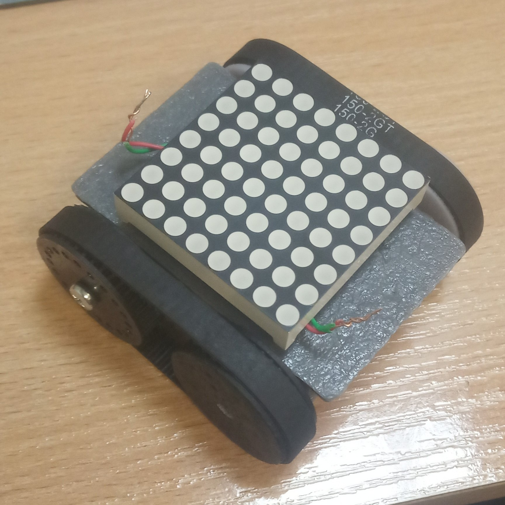
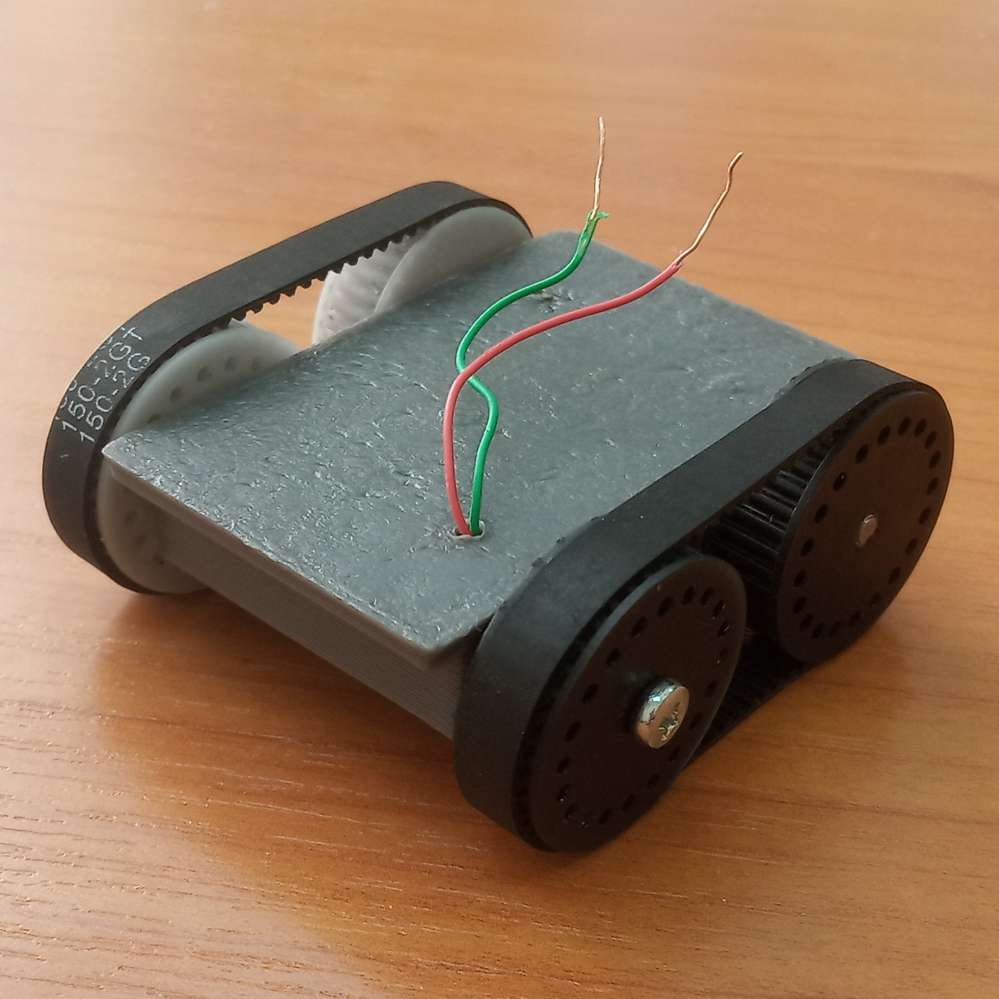
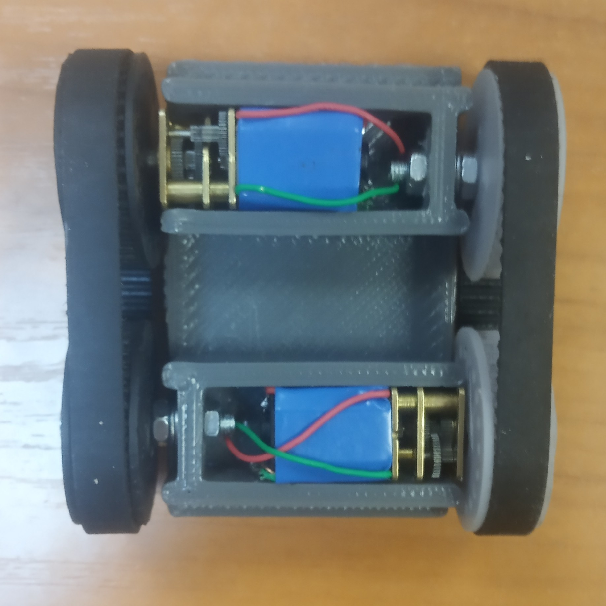

Тема: Разработка алгоритмов управления группой мобильных роботов с использованием системы технического зрения.
Разработка схемотехники робота
Система управления и технического зрения
Список требуемых электронных компонентов для макетирования
Список электронных компонентов на платуСписок требуемых механических компонентов
***************************
3D модель в ПО SolidWorks
Фото
|  |
 |
|  |
Видео
***********************************************************************************************
http://lcps.itmo.ru/projects/projects.html#multiagent
Планируемые работы:
***********************************************************************************************
Оценка положения робота по датчикам:
Сравнение оценки с оценкой положения на основе системы технического зрения и с оценкой положения по отметкам на рабочей зоне.
Система технического зрения определяющая положение метки в виде светодиодной матрицы. Передача данных с помощью светодиодной матрицы.
Алгоритмы управления
Смешанный тип системы
Централизованное управление с возможность децентарилизации и общения
между агентами напрямую.
Каждый агент можно представить абстарктным автоматом, который может
принимать и передавать сообщения.
Корректирока положения роботов при обмене между ними информацией о своем положении и предполагаемом расстоянии до другого робота.
Когда один робот обнаруживает другого, то они обмениваются информацией о своем местоположении, при этом они знают расстояние между ними.
Таким образом, положение одного робота уточняется за счет оценки учитывающей положение другого робота.
smprobotics
*******************************************
Комплектующие выданного робота
Nucleo MB1180 rev C
F103C8T6
F031K6T6
P25Q8GH
ESP8266EX
wifi - плохо - т.к. помехи из-за множества клиентов. (цена модуля 140 руб)
Общение между wifi роботами
Возможность подключить модель wifi или bluetooth
Как соединить колесо и вал мотора? также как сделано в колесах от DFRobot. Надо взять чертеж или сделать также.
Чем отличаются 34836 или TSOP 4836 ???
Solidworks
Altium +
Keil +
Matlab +
Clion
Qt
OpenCV
SFML
##############################################################
Модули которые крепятся сверху робота